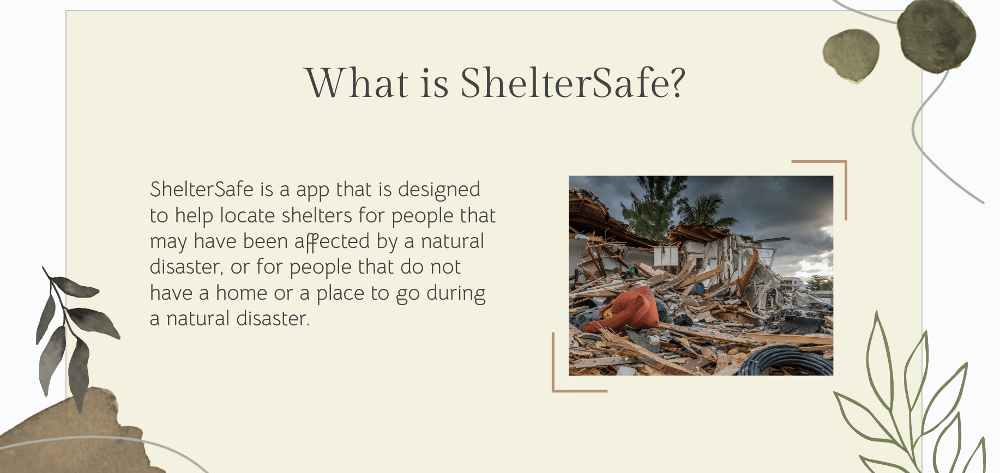
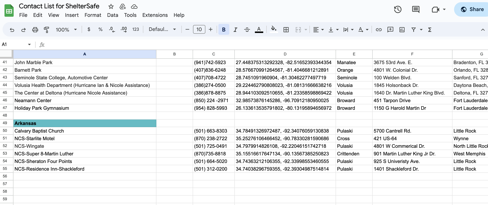
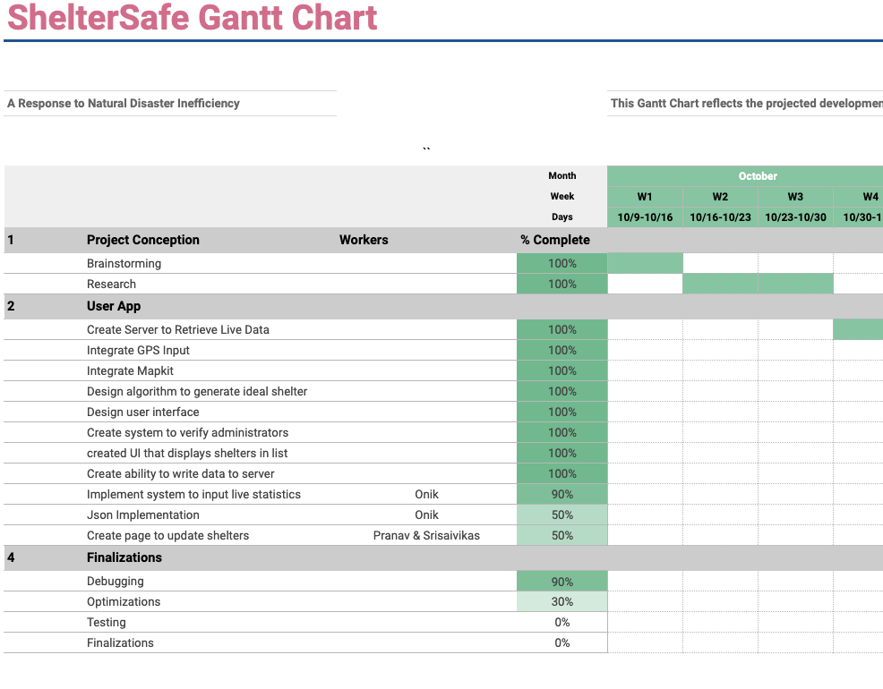
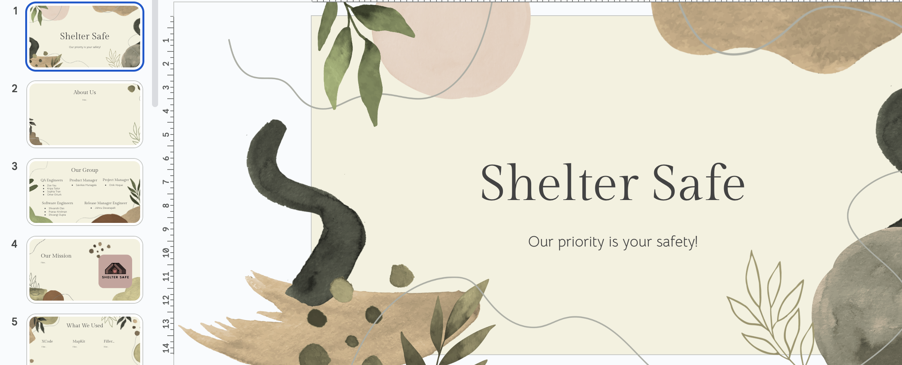

1-May-2023
Implement: Issue 86
Implement: Issue 82
This week, I plan on finishing the final presentation.
Challenges:
I am still faced with challenges regarding my xcode. After cloning it, I can still open it like last week, but the program still won't run. I will try to fix this ass soon as possible to make the final touches on the project.
Gantt Chart:
Gantt Chart
Significant Achievements:

24-Apr-2023
Plans
Implement: Issue 86
Implement: Issue 82
This week, I plan on working with some of my team members to implement a sign in with Google on the sign in page. I also plan on contiuing to work on the final presenation.
Challenges:
Unfortunately, I ran into some technical challenges with my laptop and xcode this week. My laptop kept on shutting down randomly throughout the day. It was super slow and xcode wouldn’t even open. After a couple of days, my laptop was still shutting down, but it became less frequent and I was also able to open xcode. With this being said, I still could not open the project in xcode. To overcome this challenge, I tried to clone the project again. This helped as I can now open the project, however, it is still taking longer than usual to load. I am still working on fixing this problem, but in the meantime, I have been trying to contribute by working on the final presentation as well as the contact list.
Gantt Chart:
Gantt Chart
Significant Achievements:

17-Apr-2023
Plans
Implement: Issue 47
Implement: Issue 81
This GANTT chart will allow my team to stay on track by gauging how much time we have left, knowing what we have accomplished, and what we have left to do. Furthermore, I am also planning on enabling shelters to display based on user imput.
Challenges:
When working on creating shelters based on user input, my group memebers had trouble with working with the input from the user.
Gantt Chart:
Gantt Chart
Significant Achievements:
This week, I edited the gantt chart to accurately display what we have accomplished. Furthermore, I began editing the final presentation with a few of the group members.
Edited Gantt Chart

Final Presentation

3-Apr-2023
Technical Challenges:
This week, we came up with a few questions for the FAQ as well as created a contact list. We are in the process of creating pages for these on the app.
Scheduling Challenges:
We have no scheduling challenges this week. We are utilizing the group chat and communicating well.
Interpersonal Challenges:
Again, we are communicating well and talking to each other. As a result, we don't have any interpersonal challenges.
Significant Achievements:
FAQ Questions
Contact List
27-Mar-2023
Technical Challenges:
This week, I had some trouble when creating the home page. We were able to create the page and plan the general idea for it, however, we are having trouble executing it as we wanted to add tabs on the top of the screen. I also edited the general tabs of our app this week.
Scheduling Challenges:
With clubs and other factors, people have been unavailable this week.
Interpersonal Challenges:
There have not been any interpersonal challenges as far as I am concerned. Everyone is just working on their assigned jobs.
Significant Achievements:
Home Page Update
Tabs Update
20-Mar-2023
Technical Challenges:
This week, we continued designing the logo. We had some trouble as we wanted it to look as pleasing and welcoming as possible. To overcome this challenge, we decided to use neutral and aesthetic tones. I also had some technical difficulties with xcode when designing our app. I felt stuck as there weren’t many resources online that were much help.
Scheduling Challenges:
Many people are busy with no time to work on the ISP. As a result, we are a little bit behind.
Interpersonal Challenges:
There are no interpersonal challenges as everyone is individually working on their own.
Significant Achievements:
Logo Update
13-Mar-2023
Technical Challenges:
This week, we had trouble with the .netrc file as not everyone had it. Without this file, members wouldn't be able to login to the api server. To overcome this challenge, we made sure everyone had the .netrc file. We also continued designing the logo. We had some trouble as we wanted it to look as pleasing and welcoming as possible. To overcome this challenge, we decided to use neutral and aesthetic tones. In addition to this, we also edited the MVP Presentation which contains information abut our ISP as well as pictures of our code.
Scheduling Challenges:
There has not been a lot of communication as people are busy working individually.
Interpersonal Challenges:
There have not been any major interpersonal challenges which is great!
Significant Achievements:
MVP Prensentation
20-Feb-2023
Technical Challenges:
This week, we are working on displaying locations on the map, which proved to be more difficult than we thought. One of the reasons why it is so difficult is due to the disorganization of our files. To overcome this challenge, we have to rearrange our files and remake the file hierarchy.
Scheduling Challenges:
Because students had two days off this week due to Presidents’ Day and staff development day, we only had a limited amount of class time to work on our ISP. To overcome this challenge, we had to work on our off periods and free time to compensate for this lost time.
Interpersonal Challenges:
This week, we do not have any major interpersonal challenges. With this being said, some people are facing conflicts due to not owning an Apple Mac or MacBook. Because of this, they can’t build and run the app. To overcome this challenge, they have been working on other aspects for the app, such as designs. They have been creating the icons and logos for the app.
13-Feb-2023
Technical Challenges:
The software engineers have done a great job with creating three tabs for the app. With this being said, we are having trouble with two of the three pages. The settings page is currently blank. Furthermore, the disaster status page is not in English. With this being said, so far, the app has progressed well.
Scheduling Challenges:
This week especially, I think our communication and collaboration efforts have improved. Because of this, we have not been having any major scheduling challenges. Because most of us are at the STEAM Center during lunch, we have taken advantage of our lunch time between sixth and seventh period to work on the ISP together.
Interpersonal Challenges:
We created and discussed prototype logos, color schemes, and themes this week. We currently have two logo designs, but we can't decide which one to use. The best solution to this issue is to vote. In this manner, the majority of people are satisfied. I don't mind either design, however I do favor the shelter option.
6-Feb-2023
Technical Challenges:
This week, we worked on making sure everyone had access to the project. Because we have decided to use Xcode, we all had to copy and clone the project from GitHub. I faced some challenges due to communication and storage issues, however all of this was easily resolved.
Scheduling Challenges:
We are still struggling with scheduling challenges. I am the only member in my class period, which means there are struggles with communication. However, we are actively trying to fix this and have discussed methods such as Discord to work on the project together.
Interpersonal Challenges:
Although there have been some small arguments about roles, for the most part, there have not been any interpersonal challenges that could not be fixed easily through compromises.
23-Jan-2023
Technical Challenges:
This week, we are discussing logos and slogans. Although these two factors are small, and many people often brush them off, it has been more difficult to come up with than I thought. To overcome this challenge, we will work together and come to a compromise with a logo and slogan that we all like and see fitting for our ISP.
Scheduling Challenges:
Scheduling has been a bigger problem than we have originally thought. Especially this week, everyone, including myself, have been faced with many tests and quizzes. This resulted in very little free time, as most of our time has been dedicated to studying. Hopefully, everyone can find some free time in the following days, and this problem can be resolved.
Interpersonal Challenges:
As far as I am concerned, there have been no interpersonal challenges. Everyone is getting along and working on their part of the ISP.
16-Jan-2023
Technical Challenges:
This week, as we are starting to develop our project, we are faced with some technical challenges, such as the design of our app and the use of the MapBox API. With many people a part of our group, there are many ideas to consider, and it is difficult communicating with each other. To overcome this challenge, we will meet up and discuss the layout and overall idea of what we want the app to end up looking like.
Scheduling Challenges:
With everyone’s different schedules, scheduling challenges have surfaced. My group members and I have full schedules, with clubs and extracurricular activities taking up most of our time. It has been difficult finding a time for all of us to meet up, however, I'm sure that we can meet up soon.
Interpersonal Challenges:
As of last week, we had interpersonal challenges concerning the distribution of roles. This challenge has been resolved, and there have been no new interpersonal challenges. So far, our project has progressed nicely.
9-Jan-2023
Technical Challenges:
This week my group and I created a GitHub repository along with adding issues in GitHub. While creating the repository and editing the README.md, I had some technical challenges. The main challenge I encountered was pulling the edits my team members already made. I tried the usual command “git pull”, however, it did not resolve my problem. Although help from the internet as well as my peers were much appreciated, my problem still remained. Ultimately, to overcome this problem, I asked my teacher for help, in which he was able to easily fix it.
Scheduling Challenges:
For this ISP, I am working with a group of about ten people. This is big for a project like this, and because of that, we have encountered communication and scheduling issues. To overcome this problem, we have created a group chat through text messages, and have added everyone on it. This is our main source of communication. Along with this, we are also planning on meeting up, however, with everyone having different schedules, issues have surfaced. To overcome this challenge, I think online meetings, such as through zoom, would be more convenient than in person meetings. If needed, we can have in person meetings occasionally to catch everyone up and make sure everything is on track.
Interpersonal Challenges:
With this being our first week of development, my team and I are getting all of the basics taken care of. This includes assigning roles, which has been one of our greatest challenges all week. With such a big group, many people are having trouble picking their roles, as more than one person wants to be a certain role. To overcome this, I think we should consider strengths and weaknesses to make sure our group can maximize our potential and efficiency. Furthermore, because we have a big group, people will be doubling up on roles, which can help resolve this conflict.
2-Jan-2023
Introduction:
Assigning each member a position is the best method to maintain organization and productivity when working on a project with a group or team. By having roles, everyone is able to contribute to the team and understand their particular responsibilities. The roles of (software) development engineer, QA engineer, project manager, product manager, and release engineer are a few that are commonly utilized.
(Software) Development Engineer:
Development engineers are in charge of determining a company's objectives while conceptualizing, designing, and testing a new product or product line. In my circumstance, this role is in charge of writing, testing, and debugging the code for our application. The presence of development engineers may be seen in practically every industry. Because of this, they undertake important positions and have big obligations. This is a great role, however I don't think that I am suitable for this role. I'd need to be far more knowledgeable about computer science and the development of applications. To overcome this, I could educate myself more about programming and the development process.
QA Engineer:
QA Engineers, also known as Quality Assurance Engineers, oversee the testing and quality management of software prior to the release. They are in charge of identifying and fixing bugs and errors to ensure that it runs properly and efficiently. QA Engineers have to be very detail oriented, and because of this, I feel like I would be a good fit for this role. Despite this, I anticipate that there will still be difficulties. For instance, I might encounter mistakes that I am unsure of how to correct. However, to overcome this, I will take advantage of my resources and research the bugs, or seek the aid of my peers or teacher.
Project Manager:
Project Managers plan and develop the project idea. Furthermore, they are in charge of deadlines and finances. Although money is not a major concern with our isp, deadlines are imperative. Project Managers lead and monitor the team, requiring good communication skills. They have to be creative, original, and punctual. Because of this, I think I would be a decent fit for this role. Although being a Project Manager entails a lot of responsibilities, I am well-organized and believe I can succeed with the support of my team. With that said, I might have some difficulty communicating with others and maintaining order, but this issue should be simple to resolve by simply being more assertive.
Product Manager:
Product Managers are responsible for planning and marketing. They have to be able to think in the customers’ shoes and keep the customers best interest in mind. Being a customer myself, I think I could be decent with this role. However, this role also leads the group, which requires leadership skills. This poses the same problem as being a Project Manager, such as communicating with my team members.
Release Engineer:
Release Engineers are responsible for scheduling, planning, and monitoring the software's development and delivery process. They mainly concern themselves with the delivery of the software, instead of debugging code. I have good time management skills, which makes me a great candidate for this role. With this being said, I have a proclivity to procrastinate when I am faced with a large task. To overcome this, I will set deadlines for myself to keep myself accountable.